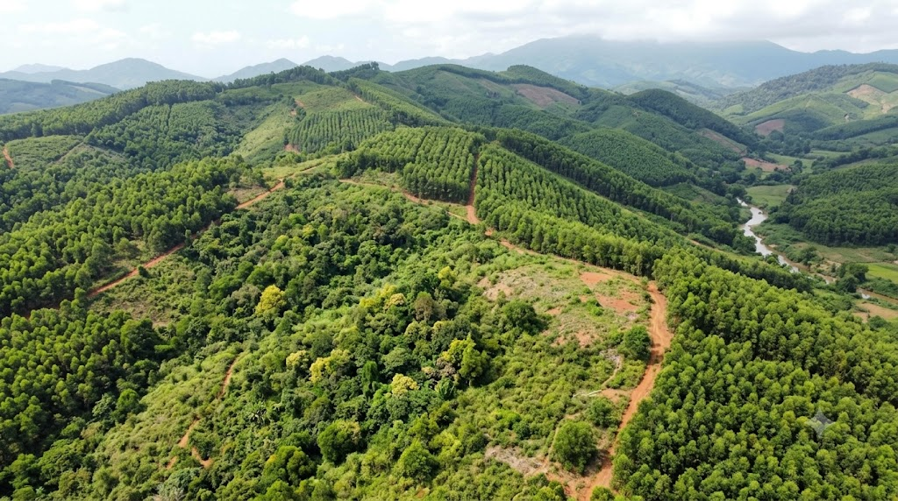
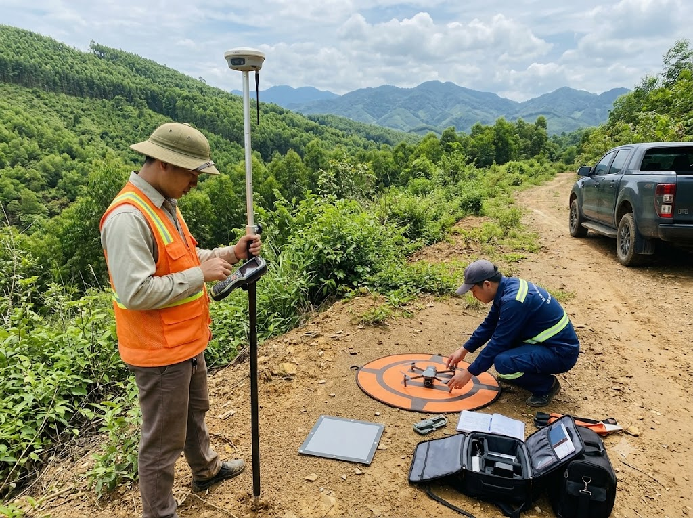
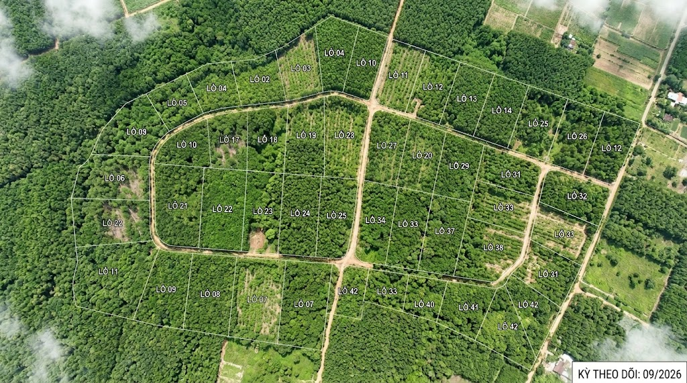
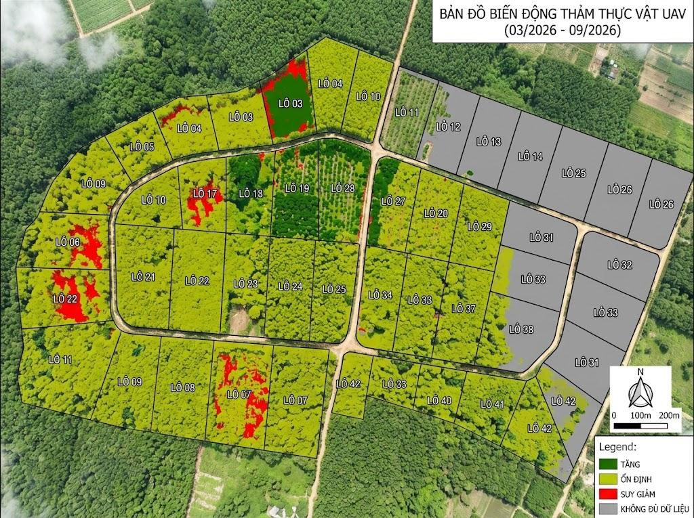
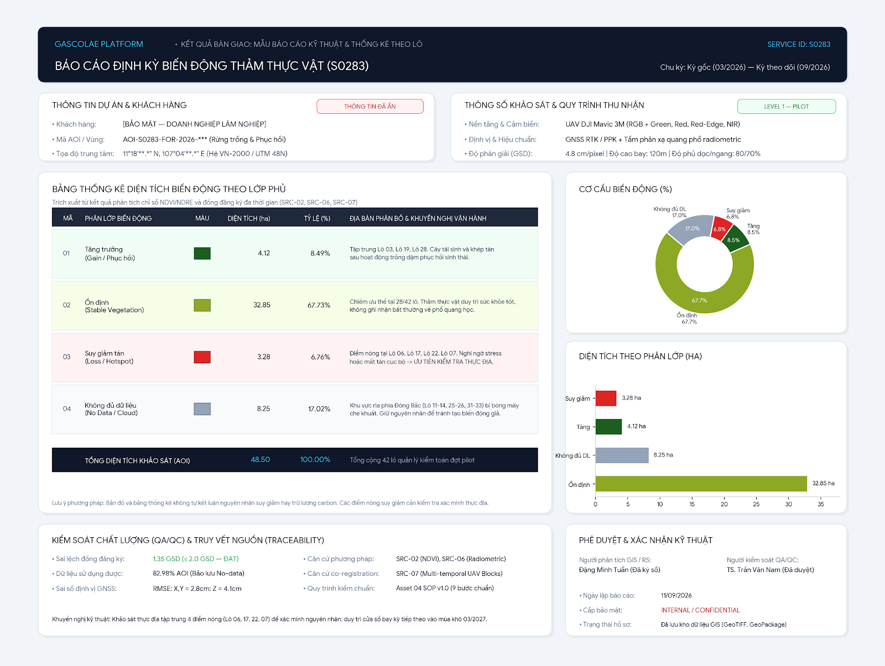
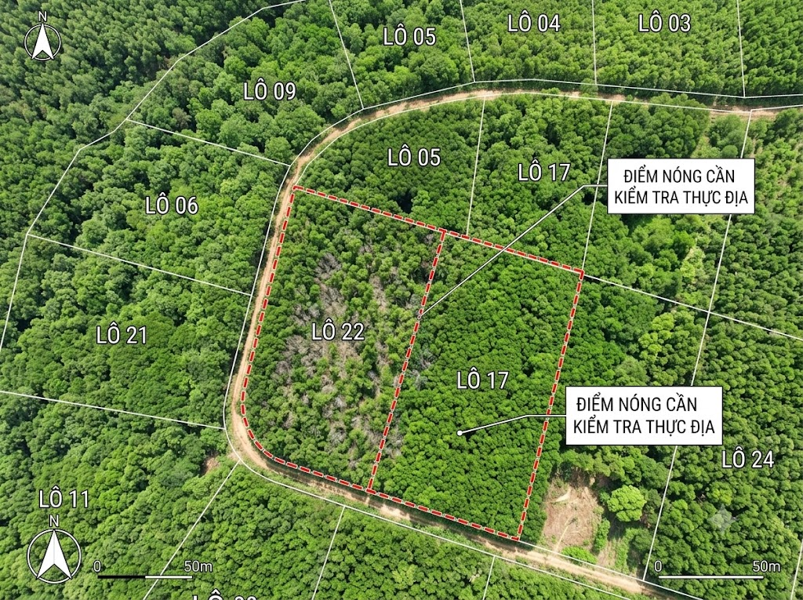
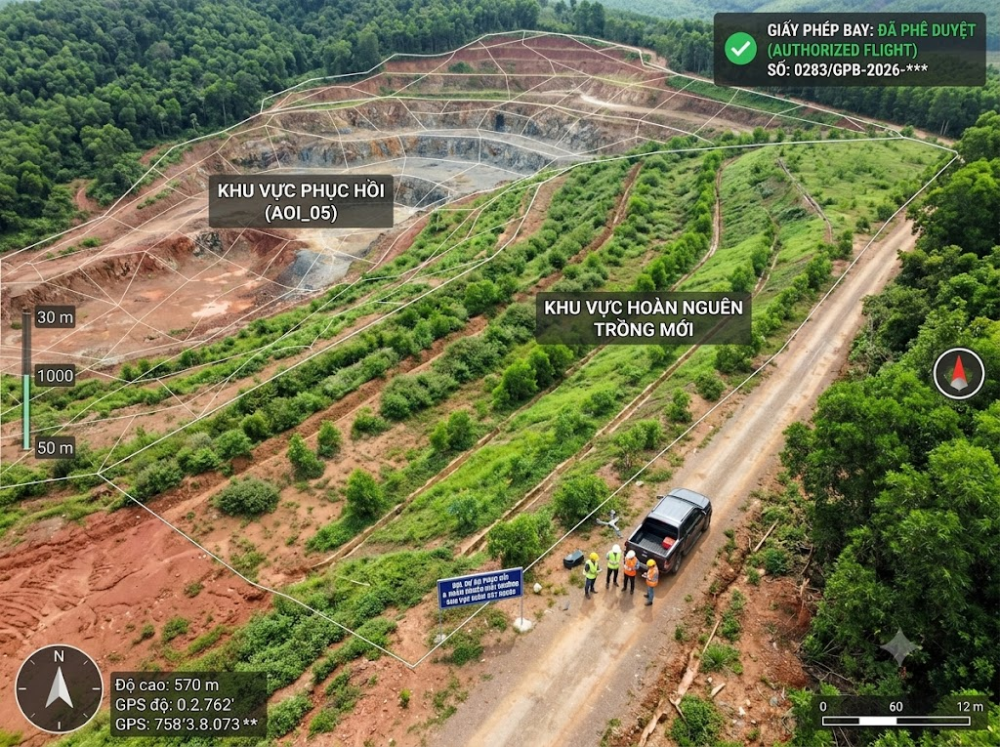

01
Rừng trồng và tái sinh
Theo dõi biến động lớp phủ theo lô để nhận biết khu vực phục hồi hoặc có dấu hiệu suy giảm giữa các kỳ.
Dịch vụ giám sát bằng UAV & GIS
Khảo sát lặp bằng thiết bị bay không người lái (UAV), kết hợp ảnh màu RGB và ảnh đa phổ để lập bản đồ vùng tăng, ổn định, suy giảm hoặc không đủ dữ liệu. Kết quả giúp xác định nơi cần ưu tiên kiểm tra thực địa.
AOI là khu vực cần theo dõi. Bắt đầu từ ranh giới khu vực và mục tiêu giám sát của bạn.

Góc nhìn thực địa
Video giới thiệu cách dữ liệu hình ảnh hỗ trợ quan sát khu vực và đối chiếu qua từng kỳ khảo sát.
Vấn đề & giải pháp
Ảnh chụp ở những thời điểm và điều kiện khác nhau có thể khiến việc nhận biết thay đổi trở nên khó khăn. Chênh lệch mùa, ánh sáng hoặc vị trí ảnh cũng có thể tạo ra tín hiệu thay đổi giả.
Cách GASCOLAE xử lý
GASCOLAE xây dựng kế hoạch khảo sát lặp, duy trì cùng phạm vi, chuẩn hóa dữ liệu và căn chỉnh ảnh giữa các kỳ. Bản đồ biến động phân biệt vùng tăng, ổn định, suy giảm hoặc không đủ dữ liệu; thống kê theo lô giúp khoanh vùng và ưu tiên kiểm tra hiện trường.
Xem kết quả bàn giao
Đối chiếu theo thời gian
So sánh ảnh của cùng khu vực sau khi được chuẩn hóa và căn chỉnh. Việc diễn giải cần xem xét mùa, giai đoạn sinh trưởng, ánh sáng và cảm biến sử dụng trong mỗi kỳ.
Minh họa cách đọc dữ liệu — chưa phải kết quả khảo sát đã được xác minh.

Kỳ gốc Kỳ theo dõiKéo thanh để mở từng lớp ảnh. Khi dùng bàn phím, chọn thanh rồi dùng phím mũi tên, Home hoặc End.
Cách đọc: thanh điều khiển chỉ thể hiện tỷ lệ khung ảnh đang được mở từ 0–100%, không phải tỷ lệ biến động thảm thực vật.
Tín hiệu thay đổi giúp khoanh vùng cần kiểm tra. Nguyên nhân cần được xác minh bằng thông tin hiện trường và chuyên gia.
Kết quả bàn giao
Kết quả được tổ chức theo kỳ khảo sát và phạm vi đã thống nhất, kèm phương pháp xử lý, điều kiện thu nhận và giới hạn diễn giải.

Mẫu báo cáo
Minh họa cách bản đồ, thống kê và thông tin kiểm soát chất lượng có thể được tổ chức trong báo cáo bàn giao.
Mẫu minh họa, không phải kết quả khách hàng. Nội dung đóng trong ảnh chưa được dùng làm số liệu trên trang.
Trao đổi nhu cầu
Ứng dụng
Dành cho chủ rừng, khu bảo tồn, doanh nghiệp nông–lâm nghiệp và các dự án phục hồi, hoàn nguyên cần theo dõi thay đổi theo không gian và thời gian.
Các tình huống dưới đây mô tả phạm vi ứng dụng, không phải danh sách dự án đã thực hiện.
01
Theo dõi biến động lớp phủ theo lô để nhận biết khu vực phục hồi hoặc có dấu hiệu suy giảm giữa các kỳ.

02
Khoanh vùng nơi có dấu hiệu mất hoặc suy giảm lớp phủ, hỗ trợ đội hiện trường lựa chọn vị trí cần kiểm tra.

03
Đối chiếu kỳ gốc với các kỳ tiếp theo để theo dõi diễn biến phục hồi lớp phủ trong khu vực dự án.
Quy trình
Phạm vi, lịch khảo sát và đầu ra được thống nhất theo khu vực và mục tiêu giám sát.
Trao đổi nhu cầuXác định
Làm rõ ranh giới, mục tiêu, dữ liệu kỳ gốc, số kỳ và kết quả cần bàn giao.
Chuẩn bị
Thống nhất phương án khảo sát lặp; rà soát điều kiện tiếp cận, an toàn, yêu cầu pháp lý và thời tiết.
Thực hiện
Khảo sát UAV RGB/đa phổ và thu thông tin kiểm chứng hiện trường theo kế hoạch đã thống nhất.
Xử lý
Chuẩn hóa, căn chỉnh ảnh giữa các kỳ; tính chỉ số, phân lớp biến động, thống kê và kiểm tra điểm cần xác minh.
Hoàn tất
Kiểm soát chất lượng, bàn giao bản đồ và báo cáo theo phạm vi; thống nhất kỳ theo dõi tiếp theo.
Gói dịch vụ
Các gói và mức giá dưới đây là cấu hình đề xuất để tham khảo. Phạm vi, lịch khảo sát và đầu ra được xác nhận theo khu vực và nhu cầu thực tế.
Cấu hình đề xuất
Tối đa 50 ha · 2 kỳ khảo sát
Đánh giá tính khả thi và thiết lập dữ liệu kỳ gốc; ảnh bản đồ, chỉ số, bản đồ biến động cơ bản và báo cáo.
Phạm vi cuối cùng chốt sau khảo sát nhu cầu.
Giá đề xuất65 triệu VNĐ/ gói dự án
Trao đổi nhu cầuCấu hình đề xuất
Tối đa 200 ha · 4 kỳ trong 12 tháng
Theo dõi định kỳ, phân tích biến động, thống kê theo lô, dữ liệu GIS và điểm nóng cần kiểm tra.
Phạm vi cuối cùng chốt sau khảo sát nhu cầu.
Giá đề xuất165 triệu VNĐ/ gói dự án
Trao đổi nhu cầuCấu hình đề xuất
Tối đa 500 ha · 6 kỳ trong 12 tháng
Phân tích nâng cao và báo cáo định kỳ. AI tùy chỉnh, bảng theo dõi trực tuyến hoặc kết nối API chỉ thuộc phạm vi nâng cao khi được thống nhất.
Phạm vi cuối cùng chốt sau khảo sát nhu cầu.
Giá đề xuất420 triệu VNĐ/ gói dự án
Trao đổi nhu cầuLưu ý: giá trên áp dụng cho cấu hình đề xuất tương ứng. Phạm vi, thuế, chi phí phát sinh và điều khoản thanh toán được xác nhận trong báo giá chính thức. Nếu nhu cầu vượt cấu hình, hãy trao đổi để xác định phạm vi phù hợp.
Câu hỏi thường gặp
Các câu trả lời giúp xác định điều kiện dữ liệu, phạm vi diễn giải và thông tin cần chuẩn bị trước khi trao đổi.
Ảnh đa phổ ghi nhận thêm các dải ánh sáng, trong đó có cận hồng ngoại, để tính chỉ số thực vật. Ảnh RGB giúp quan sát hình thái, còn chỉ số sử dụng được lựa chọn theo cảm biến và mục tiêu theo dõi.
Không nên so sánh trực tiếp khi điều kiện thu nhận khác nhau. Cần căn chỉnh vị trí, chuẩn hóa dữ liệu và xem xét mùa, giai đoạn sinh trưởng, ánh sáng, độ phân giải và cảm biến để hạn chế tín hiệu thay đổi giả.
Dữ liệu giúp khoanh vùng tín hiệu thay đổi. Để xác định nguyên nhân, cần đối chiếu lịch tác động, kiểm tra thực địa và đánh giá của chuyên gia.
S0283 cung cấp bằng chứng về lớp phủ và biến động. Việc tính hoặc xác minh carbon cần mô hình được hiệu chuẩn và quy trình đo đạc, báo cáo, thẩm định (MRV) phù hợp; bản đồ biến động không thay thế các bước đó.
Bạn có thể cung cấp địa điểm, ranh giới hoặc mô tả khu vực, diện tích ước tính, mục tiêu và số kỳ mong muốn. Nếu đã có ảnh hoặc dữ liệu kỳ gốc, hãy cho biết để cùng đánh giá khả năng sử dụng.
Trao đổi nhu cầu
Cho biết khu vực và mục tiêu giám sát để cùng xác định phạm vi khảo sát phù hợp.
Bản demo — thông tin chưa được gửi. Kênh liên hệ chính thức đang được cập nhật.